항공산업기사 (2009-08-30 기출문제)
1과목: 항공역학
1. 옆놀이 커플링을 줄이는 방법으로 틀린 것은?
- 방향 안정성을 증가시킨다.
- 옆놀이 운동에서 옆놀이 율이나 기간을 제한한다.
- 정상 비행상태에서 바람 축과의 경사를 최대한 크게 한다.
- 정상 비행상태에서 불필요한 공력 커플링을 감소 시킨다.
(정답률: 79%)

2. 날개의 가로세로비에 대한 설명으로 옳은 것은?
- 가로세로비가 커지면 양항비는 작아진다.
- 가로세로비가 커지면 횡 안정이 나빠진다.
- 가로세로비가 커지면 유도항력계수는 작아진다.
- 가로세로비는 익폭의 제곱에 날개 면적을 곱한 것이다.
(정답률: 84%)
3. 프로펠러의 회전수가 N[rpm]이라면 프로펠러의 각속도[rad/s]를 구하는 식으로 옳은 것은?
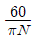
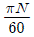
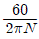
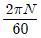
(정답률: 70%)
4. 프로펠러의 슬립을 옳게 설명한 것은?
- 프로펠러 이론 회전수와 기관의 회전수의 합을 프로 펠러의 실제 회전수에 대한 백분율로 표시한 것
- 프로펠러 이론 회전수와 기관의 회전수의 차를 프로펠러의 실제 회전수에 대한 백분율로 표시한 것
- 기하학적피치와 유효피치의 차를 평균 기하학적피치에 대한 백분율로 표시한 것
- 유효피치와 기하학적피치의 합을 평균 기하학적피치에 대한 백분율로 표시한 것
(정답률: 81%)
5. 다음 중 수평선회에 대한 설명으로 틀린 것은?
- 선회반경은 속도가 클수록 커진다.
- 경사각이 크면 선회반경은 작아진다.
- 경사각이 클수록 선회속도를 크게 해야 한다.
- 선회 시 실속속도는 수평비행 실속 속도보다 작다.
(정답률: 62%)
6. 일반적으로 비행기의 안정성과 조종성에 대한 관계를 옳게 설명한 것은?
- 안정성이 좋아지면 조종성도 향상된다.
- 안정성이 좋아지면 조종성은 저하된다.
- 안정성을 향상시키기 위하여 조종성은 일정하게 유지해야 한다.
- 조종성을 향상시키기 위하여 안정성을 일정하게 유지해야 한다.
(정답률: 92%)
7. 날개의 시위길이가 6m, 공기의 흐름 속도가 360 ㎞/h .공기의 동점성 계수가 0.3cm2/s 일 때 레이놀즈수는 약 얼마인가?
- 1×107
- 2×107
- 1×108
- 2×108
(정답률: 80%)
8. 다음 중 항공기의 방향 안정성이 주된 목적인 것은?
- 수직 안정판
- 주익의 상반각
- 수평안정판
- 주익의 붙임각
(정답률: 87%)
9. 다음 중 비행기가 장주기 운동을 할 때 변화가 없는 요소는?
- 받음각
- 비행속도
- 키놀이 자세
- 비행고도
(정답률: 73%)
10. 그림과 같이 유체 속에서 평판이 벽에서 일정한 거리 h만큼 떨어져 속도 V로 이동할 때 작용하는 힘(F)과 비례 하지 않는 요소는?
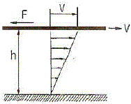
- 점성계수
- 거리
- 작용면적
- 평판의 속도
(정답률: 66%)
11. 중량이 일정한 항공기가 등속도 수평비행을 할 경우 항공기의 추력과 양항비와의 관계를 가장 옳게 설명한 것은?
- 추력은 양항비에 비례한다.
- 추력은 양항비에 반비례한다.
- 추력은 양항비의 제곱에 비례한다.
- 추력은 양항비의 제곱에 반비례한다.
(정답률: 68%)
12. 항공기에 쳐든 각을 주는 주된 이유로 옳은 것은?
- 익단 실속을 방지할 수 있다.
- 임계 마하수를 높일 수 있다
- 가로 안정성을 높일 수 있다.
- 피칭 모멘트를 증가 시킬 수 있다.
(정답률: 80%)
13. 헬리콥터의 메인 로터 브레이드에 플래핑 힌지를 장착함으로써 얻을 수 있는 장점이 아닌 것은?
- 돌풍에 의한 영향을 제거할 수 있다.
- 지면효과를 발생시켜 양력을 증가 시킬 수 있다.
- 회전축을 기울이지 않고 회전면을 기울일 수 있다.
- 주 회전날개 깃뿌리에 걸린 굽힘 모멘트를 줄일 수 있다.
(정답률: 63%)
14. 다음 중 항공기 날개 단면 주위에 발생하는 미지량
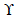
의 크기를 결정하여 양력을 구하는데 사용되는 이론은?- Pascal 정리
- Bernoulli 정리
- Prandtl 정리
- Kutta-joukowski 정리
(정답률: 61%)
15. 해면에서의 온도가 20도 일 때 고도 5km의 온도는 약 몇 도 인가?
- -12.5
- -13.5
- -14.5
- -15.5
(정답률: 88%)
16. 항공기의 스핀에 대한 설명으로 틀린 것은?
- 수직스핀은 수평수핀보다 회전 각속도가 크다.
- 스핀 중에는 일반적으로 옆미끄럼이 발생한다.
- 강하속도 및 옆놀이 각속도가 일정하게 유지되면서 강하하는 상태를 정상스핀이라 한다.
- 스핀상태를 탈출하기 위하여 방향키를 스핀 반대 방향으로 밀고, 동시에 승강키를 앞으로 밀어낸다.
(정답률: 69%)
17. 무게1000 kgf의 항공기가 30도의 활공각으로 활공하고 있을 경우 항공기에 작용하고 있는 양력은 약 몇 kgf인가?
- 577
- 866
- 1000
- 1732
(정답률: 67%)
18. 다음 중 헬리콥터의 프리휠 장치의 주된 역할은?
- 회전 날개가 기관을 구동시킬 수 없도록 하는 장치
- 기관 정지 시 회전날개가 기관을 구동시킬 수 있도록 하는 장치
- 자전 강하 시 회전날개가 기관을 구동시킬 수 있도록 하는 장치
- 기관 정지 시 회전날개의 회전력으로 비상 장비를 작동 시킬 수 있게 하는 장치
(정답률: 54%)
19. 이륙 중량이 1500kgf, 기관의 출력이 200HP인 비행기가 5000m고도를 50% 출력으로 270km/h 등속도 순항비행하고 있을 때 양항비는 얼마인가?(오류 신고가 접수된 문제입니다. 반드시 정답과 해설을 확인하시기 바랍니다.)
- 5
- 10
- 15
- 20
(정답률: 50%)
20. 다음 중 초음속 날개의 에어포일로 가장 적당한 것은?
- 두께가 얇은 것
- 가로세로비가 큰 것
- 앞전 반경이 큰 것
- 캠버(Camber)가 큰 것
(정답률: 79%)
2과목: 항공기관
21. 오토 사이클의 열효율을 옳게 나타낸 것은?
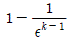
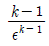
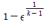
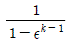
(정답률: 66%)
22. 가스터빈 기관의 공압 시동기(Pneumatic starter)에 공급되는 고압공기 동력원이 아닌 것은?
- 다른 기관의 배기가스(Exhaust gas)
- 다른 기관의 블리드 공기(Bleed air)
- 지상동력장치(GPU, ground power unit)
- 보조동력장치(APU, auxiliary power unit)
(정답률: 73%)
23. 다음 중 터보 팬 기관에서 터빈 노즐 가이드 베인 (Turbine Nozzle Guide Vane)의 냉각에 주로 사용 되는 것은?
- 저압 압축기 배출공기
- 고압 압축기 배출공기
- 팬 배기 공기(Fan Discharge Air)
- 연소실의 냉각구멍을 통해 들어온 공기
(정답률: 54%)
24. 프로펠러를 설계할 때 프로펠러 효율을 높이기 위한 방법으로 가장 옳은 것은?
- 재질이 강한 강 합금으로 제작한다.
- 프로펠러의 전연(Leading Edge)은 두껍게 한다
- 프로펠러 팁(Tip) 근처는 얇은 에어포일 단면을 사용한다.
- 프로펠러의 팁(Tip)과 전연(Leading Edge)의 모양을 같게 한다.
(정답률: 69%)
25. 다음 중 고공에서 극초음속으로 비행하는데 성능이 가장 좋은 기관은?
- 터보 팬기관
- 램 제트기관
- 펄스 제트기관
- 터보 제트기관
(정답률: 68%)
26. 고정 피치 프로펠러를 장착한 항공기의 프로펠러 회전 속도를 증가시키면 블레이드는 어떻게 되는가?
- 블레이드 각(Blade Angle)이 증가한다.
- 블레이드 각(Blade Angle)이 감소한다.
- 블레이드 영각(Angle of Attack)이 증가한다.
- 블레이드 영각(Angle of Attack)이 감소한다.
(정답률: 66%)
27. 다음과 같은 가스터빈기관의 기본구성도와 브레이튼 사이클(Brayton cycle)에서 연소기의 가열량을 옳게 나타낸 것은?
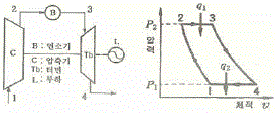
- Cp(T2 - T1)
- Cp(T3 - T2)
- Cp(T3 - T4)
- Cp(T1 - T4)
(정답률: 69%)
28. 다음 중 내연기관이 아닌 것은?
- 디젤기관
- 가스터빈기관
- 가솔린기관
- 증기터빈기관
(정답률: 80%)
29. 왕복기관의 기화기빙결로 인하여 나타나는 현상이 아닌 것은?
- 출력 감소
- 흡기압력 감소
- 디토네이션
- 역화(Backfire)
(정답률: 59%)
30. 다음 중 터보제트기관에서 배기노즐(Exhaust nozzle)의 주목적은?
- 배기가스를 균일하게 정류만 하기 위하여
- 배기가스의 온도를 높게 조절하기 위하여
- 배기가스의 고온에너지를 압력에너지로 바꾸어 추력을 얻기 위하여
- 배기가스의 압력에너지를 속도에너지로 바꾸어 추력을 얻기 위하여
(정답률: 87%)
31. 피스톤 핀과 크랭크축을 연결하는 막대이며, 피스톤의 왕복 운동을 크랭크축으로 전달하는 일을 하는 기관의 부품은?
- 실린더 배럴
- 피스톤 링
- 커넥팅 로드
- 플라이 휠
(정답률: 92%)
32. 가스터빈기관에서 터빈 블레이드의 진동을 축소시키고 공기흐름 특성을 개선시키는 것은?
- 충동형 블레이드(Impulse blade)
- 쉬라우드 블레이드(Shrouded blade)
- 전나무형 블레이드(Fir tree blade)
- 도브 테일형 블레이드(Dove tail blade)
(정답률: 74%)
33. 왕복기관의 연료계통에서 증기폐색에 대한 설명으로 가장 옳은 것은?
- 연료 펌프의 고착을 말한다.
- 연료계통에 수증기가 형성되는 것을 말한다.
- 캬브레터(Carburetter)에서의 연료 증발을 말한다.
- 연료의 흐름속도가 클 때 관내 증기포를 만들 어 연료흐름이 차단되는 것을 말한다.
(정답률: 78%)
34. 가스터빈기관 연료의 성질로 가장 옳은 것은?
- 발열량은 연료를 구성하는 탄화수소와 그 외 화합물의 함유물에 의해서 결정된다.
- 연료 노즐에서의 분출량은 연료의 점도에는 영향을 받으나, 노즐의 형상에는 영향을 받지 않는다.
- 유황분이 많으면 공해문제를 일으키지만 기관 고온 부품의 수명을 연장시킨다.
- 가스터빈기관 연료는 왕복기관보다 인화점이 낮으므로 안전하다.
(정답률: 71%)
35. 다음 중 항공기 왕복기관의 효율과 마력에 대한 설명으로 틀린 것은?
- 지시마력은 지압선도부터 구할 수 있다.
- 축마력은 실제 크랭크 축으로부터 측정한다.
- 연료소비율(SFC)은 1마력당 1시간동안의 연료소비량이다.
- 기계효율은 지시마력과 이론마력의 비이다.
(정답률: 78%)
36. 마그네토의 표시 DF18RN 의 설명으로 옳은 것은?
- 단식이다.
- 오른쪽으로 회전한다.
- 실린더 수는 8개이다.
- 베이스 장착 방식이다.
(정답률: 83%)
37. 일반적으로 왕복기관에서 가장 많이 사용되는 오일펌프 형식은?
- Vane type
- Piston type
- Gear type
- Centrifugal type
(정답률: 61%)
38. 온도 20°C 의 이상기체가 압력 760mmHg인 공간 100m3에 채워져 있다. 만약 밀폐된 공간 500m3 으로 등온팽창 하였다면 이 때의 압력은 몇 mmHg 인가?
- 152
- 304
- 3040
- 3800
(정답률: 41%)
39. 항공기 왕복기관의 부자식 기화기에서 가속 펌프의 주된 기능으로 옳은 것은?
- 고고도에서 혼합비를 희박하게 한다.
- 고출력으로 작동할 때 추가공기를 공급한다.
- 이륙 시 기관구동펌프의 회전 속도를 증가 시킨다.
- 스로틀(Throttle)이 갑자기 열릴 때 추가연료를 공급한다.
(정답률: 75%)
40. 가스터빈기관의 점화계통에 대한 설명 중 틀린 것은?
- 유도형과 용량형이 있다.
- 점화시기 조절장치가 없다.
- 기관 작동 중에 항상 점화한다.
- 높은 에너지의 전기 스파크를 이용한다.
(정답률: 64%)
3과목: 항공기체
41. 민간 항공기에서 주로 사용하는 Integral fuel tank 의 가장 큰 장점은?
- 연료의 누설이 없다.
- 화재의 위험이 없다.
- 연료의 공급이 쉽다.
- 무게를 감소시킬 수 있다.
(정답률: 85%)
42. 한쪽 끝은 고정되어 있고, 다른 한쪽 끝은 자유단으로 되어있는, 지름이 3cm, 길이가 150cm 인 원기둥의 세장비는 약 얼마인가?
- 21.5
- 63.7
- 112
- 200
(정답률: 34%)
43. 0.0625in 두께의 알루미늄판 2개를 겹치기 이음을 하기위해 1/8in 직경의 유니버셜 리벳을 사용한다면 최소한 리벳의 길이는 몇 in 이어야 하는가?
- 1/8
- 3/16
- 5/16
- 3/8
(정답률: 66%)
44. 너트의 부품 번호가 AN310D-5 일 때 310 은 무엇을 나타내는가?
- 너트 계열
- 너트의 지름(3/10)
- 너트의 길이
- 재질(2017T)번호
(정답률: 68%)
45. 다음 중 승강타에 대한 설명으로 틀린 것은?
- 수평 안전판의 후방에 설치되어 있다.
- 승강타는 토크 튜브를 사용하지 않는다.
- 기체에 기수상향 또는 기수하향 모멘트를 발생시킨다.
- 유압식 동력장치를 사용한 비행기를 제외한 조종면은 매스 밸런스가 필요하다.
(정답률: 66%)
46. 비파괴검사 중 큰 하중을 받는 알루미늄 합금구조물의 내부를 검사하는데 가장 적절한 것은?
- 자기검사
- 형광침투검사
- 색채침투검사
- 방사선투과검사
(정답률: 79%)
47. 세미모노코크(Semimonocoque)구조형식의 날개 구조를 이루는 부재로만 나열된 것은?
- 스파(Spar), 리브(Rib), 스트링거(Stringer), 외피(Skin)
- 스트링거(Stringer), 벌크헤드(Bulkhead), 외피(Skin)
- 스트링거(Stringer), 론저론(Longeron), 외피(Skin)
- 플랩(Flap), 론저론(Longeron), 스포일러(Spoiler)
(정답률: 79%)
48. 바퀴의 수에 따라 분류한 착륙장치의 종류가 아닌 것은?
- 이중식(Dual type)
- 단일식(Single type)
- 다발식(Multi)
- 트럭식(Truck type)
(정답률: 64%)
49. 항공기 볼트 중 직경이 1인치인 Class 3NF(American National Fine Pitch) 볼트는 1인치당 몇 개의 나사산(Thread)으로 되어 있는가?
- 10
- 12
- 14
- 16
(정답률: 59%)
50. 일명 케블라(Kevlar)라고 불리며, 비중이 작으므로 구조물의 경량화를 위하여 사용량이 증가되고 있는 복합재료는?
- 세라믹
- 열경화성수지
- 유리섬유
- 아라미드섬유
(정답률: 83%)
51. 실속속도 100mph 인 비행기의 설계제한 하중배수가 4일 때, 이 비행기의 설계운용속도는 몇 mph 인가?
- 100
- 150
- 200
- 400
(정답률: 62%)
52. 유효길이 15in 의 토크렌치에 5in 인 연장 공구를 사용하여 1500in-lbs 의 토크로 조이려고 한다면 토크렌치의 지시값은 몇 in-lbs 인가?
- 1100
- 1125
- 1200
- 1215
(정답률: 72%)
53. 알루미늄 합금 중 개략적으로 구리 2.5%, 망간 0.2%, 마그네슘 0.5%, 규소 0.8%, 의 성분으로 되어있으며 완전히 시효 경화된 상태로 사용 가능하여 주요강도 부재이외의 대부분 구조 부품의 리벳으로 사용되는 것은?
- 2014
- 2017
- 2117
- 7075
(정답률: 43%)
54. 딤플링(Dimpling) 작업 시 주의사항이 아닌 것은?
- 반대방향으로 다시 딤플링을 하지 않는다.
- 7000시리즈의 알루미늄합금은 딤플링을 적용하지 않으면 균열을 일으킨다.
- 판을 2개 이상 겹쳐서 딤플링하는 방법은 가능한한 하지 않는다.
- 스커드 판 위에서 미끄러지지 않게 스커드를 확실히 잡고 수평으로 유지한다.
(정답률: 55%)
55. 항공기 기체의 비틀림 강도를 높이기 위한 방법으로 틀린 것은?
- 기체의 길이를 증가시킨다.
- 기체 표피의 두께를 증가시킨다.
- 표피소재의 전단계수를 증가시킨다.
- 기체의 극단면 2차 모멘트를 증가시킨다.
(정답률: 71%)
56. 다음 중 아크 용접에 속하는 것은?
- 단접법
- 테르밋 용접
- 업셋 용접
- 원자소수 용접
(정답률: 72%)
57. 다음 중 설계하중을 옳게 나타낸 것은?
- 종극하중 × 종극하중계수
- 한계하중 × 안전계수
- 극한하중 × 설계하중계수
- 극한하중 × 종극하중계수
(정답률: 76%)
58. 다음 중 변형률에 대한 설명으로 틀린 것은?
- 변형률은 길이와 길이의 비이므로 차원은 없다.
- 변형률은 변화량과 본래의 치수와의 비를 말한다.
- 변형률은 비례한계 내에서 응력과 정비례관계에 있다.
- 일반적으로 인장봉에서 가로변형율은 신장율을, 축변형율은 폭의 증가를 나타낸다.
(정답률: 60%)
59. 다음 중 조종 케이블의 장력을 측정하는 기구는?
- 턴버클(Turn Buckle)
- 프로트랙터(Protractor)
- 케이블 리깅(Cable Rigging)
- 케이블 텐션미터(Cable Tension Meter)
(정답률: 85%)
60. 나셀(Nacerlle)에 대한 설명으로 옳은 것은?
- 기체의 인장하중(Tension)을 담당한다.
- 기체에 장착된 기관을 둘러싼 부분을 말한다.
- 일반적으로 기체의 중심에 위치하여 날개구조를 보완한다.
- 기관을 장착하여 하중을 담당하기 위한 구조물이다.
(정답률: 86%)
4과목: 항공장비
61. 유압 계통에서 레저버(Reservoir) 내에 있는 standpipe의 주된 역할은?
- Vent 역할을 한다.
- 비상시 작동유의 예비공급 역할을 한다.
- 계통 내의 압력 유동을 감소시키는 역할을 한다.
- 탱크 내의 거품이 생기는 것을 방지하는 역할을 한다.
(정답률: 70%)
62. 항공기 부품을 사용하기 위하여 4셀 14.8V과2200mAh의 축전지를 사용하였다면 1셀의 전압과 용량으로 옳은 것은?
- 3.7V, 2200mAh
- 7.4V, 2200mAh
- 14.8V, 1100mAh
- 14.8V, 2200mAh
(정답률: 66%)
63. 대형 제트항공기에서 결빙을 억제하기 위한 법 중 틀린 것은?
- 전열선을 사용한다.
- 뜨거운 공기를 사용한다.
- 부츠의 팽창과 수축을 사용한다.
- 습기를 제거하기 위하여 진공장치를 사용한다.
(정답률: 75%)
64. Transmitter 와 Indicator 양쪽 모두 △ 또는 Y 결선의 Stator 와 교류 전자석의 Rotor 사이에서 발생되는 전류와 자장발생에 의해 동조되는 방식의 계기는?
- 데신(Desyn)
- 마그네신(Magnesyn)
- 오토신(Autosyn)
- 일렉트로신(Electrosyn)
(정답률: 74%)
65. 고도계의 보정(Setting)방법이 아닌 것은?
- QNH 보정
- QNG 보정
- QNE 보정
- QFE 보정
(정답률: 81%)
66. 항공기에서 사용되는 공기압 계통에 대한 설명 중 가장 관계가 먼 내용은?
- 대형 항공기에는 주로 유압계통에 대한 보조수단으로 사용한다.
- 소형 항공기에서는 브레이크장치, 플랩작동장치 등을 작동시키는데 사용한다.
- 적은 양으로 큰 힘을 얻을 수 있고, 깨끗하며 불연성(Non-inflammable)이다.
- 공기압의 재활용으로 귀환관이 필요하나 유압계통 보다는 계통이 단순하다.
(정답률: 75%)
67. 지자기의 3요소 중 편각에 대한 설명으로 옳은 것은?
- Flux Valve 가 편각을 감지한다.
- 지자력의 지구수평에 대한 분력을 의미한다.
- 지자기 자력선의 방향과 수평선 간의 각을 말하며 양극으로 갈수록 90〫°에 가까워진다.
- 지축과 지자기축이 서로 일치하지 않음으로서 발생되는 진방위와 자방위의 차이를 말한다.
(정답률: 62%)
68. 기본적인 에어 사이클 냉각 계통의 구성으로 옳은 것은?
- 히터, 냉각기, 압축기
- 열교환기, 증발기, 히터
- 압축기, 열교환기, 터빈
- 바깥공기, 압축기, 엔진브리드공기
(정답률: 78%)
69. 객실 여압장치를 통하여 최대운용고도를 유지하고 있는 항공기에서 환기장치를 작동하여 객실 내에 있는 공기를 급격히 배출하였을 때 일어나는 현상으로 옳은 것은?
- 객실 고도가 올라간다.
- 객실 압력이 증가한다.
- 객실 고도가 내려간다.
- 객실 공기밀도가 증가한다.
(정답률: 53%)
70. 교류와 직류의 겸용이 가능하며, 인가되는 전류의 형식에 구애됨이 없이 항상 일정한 방향으로 구동될 수 있는 전기는?
- Induction motor
- Universal motor
- Synchronous motor
- Reversible motor
(정답률: 83%)
71. 자이로의 섭동성을 이용한 것으로 항공기의 선회율을 지시하는 계기는?
- 자세지시계
- 선회경사계
- 마하속도계
- 방향지시계
(정답률: 92%)
72. 전파(Radio Wave)가 공중으로 발사되어 전리층에 의해서 반사되는데 이 전리층을 설명한 내용으로 틀린 것은?
- 태양에서 발사된 복사선 및 복사 미립자에 의해 대기가 전리된 영역이다.
- 주간에만 나타나 단파대에 영향이 나타나며 D층에서는 전파가 흡수된다.
- 전리층이 전파에 미치는 영향은 그 안의 전자 밀도와는 관계가 없다.
- 전리층의 높이나 전리의 정도는 시각, 계절에 따라 변한다.
(정답률: 77%)
73. 다음 중 3Ω의 저항 3개로 서로 직렬 또는 병렬연결 하여 얻을 수 있는 가장 적은 저항값은 몇 Ω인가?
- 1/3
- 2/3
- 1
- 3
(정답률: 78%)
74. 위성통신장치에서 지상국 시스템의 송신계에 가장 적합한 증폭기는?
- 저잡음 증폭기
- 저출력 증폭기
- 고출력 증폭기
- 전자 냉각 증폭기
(정답률: 79%)
75. 다음 중 화재시 사용되는 소화제로 적당하지 않은 것은?
- 이산화탄소
- 물
- 암모니아가스
- 하론1211
(정답률: 86%)
76. 일반적으로 항공기에서 사용하는 AWG 도선 규격에서 cail의 의미로 옳은 것은?
- 도선의 지름을 1/1000 인치 단위로 환산한 분자의 수치
- 도선의 단면적을 1/1000 인치 단위로 환산한 분자의 수치
- 도선의 지름을 1/1000 인치 단위로 환산하여 분자의 수치를 제곱한 것
- 도선의 단면적을 1/1000 인치 단위로 환산하여 분자의 수치를 제곱한 것
(정답률: 58%)
77. 압력조절기가 너무 빈번하게 작동하는 것을 방지하며, 갑작스럽게 계통압력이 상승할 때 압력을 흡수하는 유압 구성품은?
- 레저버
- 체크 밸브
- 축압기
- 릴리프 밸브
(정답률: 74%)
78. 다음 중 구름이나 비에 대해 반사되기 쉬운 주파수를 이용하여 영상을 만들어 안전 비행을 위하여 기상 상태를 알려주는 항법 시스템은?
- Localizer
- Weather Radar
- Glide Slop
- Marker Beacon
(정답률: 90%)
79. 온도 보상용으로 쓰일 수 있는 소자로 가장 적합한 것은?
- 바리스터(Varister)
- 서미스터(Thermister)
- 제너다이오드(Zener diode)
- 바렉터다이오드(Varactor diode)
(정답률: 82%)
80. 3상 교류발전기에서 발전된 전압을 정의 방향 으로 순차적으로 모두 합하면 얼마가 되겠는가?
- 0
- 1
- √3
- 3
(정답률: 62%)